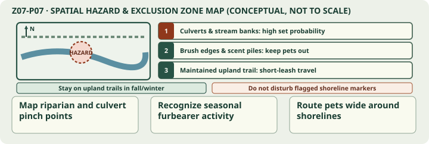

Z07-P07 · Traps and snares · New manuscript
Furbearer Ecology and Riparian Travel Corridors
Understand where regional furbearers naturally travel so hikers and pet owners recognize higher-risk shoreline and culvert zones during open seasons.
When it applies · Ecological hazard awareness along streams, beaver ponds, culverts, and forest edges.
Equipment · Topographic map, seasonal calendar.

Actions
- Understand that semi-aquatic and terrestrial furbearers—including beaver, muskrat, mink, otter, raccoon, fox, and coyote—concentrate movement along stream banks, culverts, beaver dams, and marsh edges.[L05, L10, L12]
- Use this ecological knowledge strictly for hazard awareness: during autumn and winter open seasons on multi-use lands, shoreline pinch points and culvert mouths are the most likely places to encounter lawful sets.[L01, L10]
- Keep hikers, children, and leashed dogs on established upland trails away from stream-bank overhangs, culvert openings, and scent-marked brush piles.[L10, L12]
Failure recognition · Letting a dog investigate culvert pipes, beaver channels, or marsh banks on open public land during fall/winter invites sudden severe injury.[L10, L12]
Verify · Route selection favors clear upland trails and keeps pets strictly away from riparian pinch points during trapping seasons.[L10, L12]
Stop or change course · Stop allowing pets or children near culvert mouths, flagged shoreline stakes, or strong fishy/meaty odors on multi-use lands.[L10, L12]
Evidence and editorial notes
- L01 · Minnesota DNR · Minnesota Trapping Regulations and Fur Harvest Rules (Current web edition)
- Section: Minnesota trapping licensing, seasons, and statutory limits · Conditions: Any regulated trapping activity or legal reference in Minnesota
Support: Trapping is strictly regulated by license, season, species, trap type, set location, check intervals, and landowner permission; unauthorized trapping is illegal.
Limitations: Emergency narratives never create an exemption to set traps or snares; verify current statute and DNR handbook every season. · Conflicting evidence: None noted.
Editorial note: Primary Z07 legal boundary. · Specialist reviewer: Wildlife law and DNR enforcement reviewer
Primary source · checked 2026-11-25 - L05 · Minnesota DNR · Nongame Wildlife Program and Protected Species (Current web edition)
- Section: Nongame wildlife protection and ecological role · Conditions: Non-harvested wildlife across forests, wetlands, and prairies
Support: Most wild mammals, songbirds, raptors, and reptiles are legally protected nongame species that may not be captured or killed.
Limitations: Ecological stewardship prioritizes observation and avoidance over capture. · Conflicting evidence: None noted.
Editorial note: Frames Z07 ecological ethics. · Specialist reviewer: Nongame wildlife biologist
Primary source · checked 2026-11-25 - L10 · Minnesota DNR · Minnesota Trapping Regulations and Fur Harvest Rules (Current web edition)
- Section: Human and pet hazard recognition around lawful trapping areas · Conditions: Walking dogs or hiking in open public-use lands during furbearer seasons
Support: Keep dogs on short leashes on open multi-use lands during autumn/winter trapping seasons, avoid bait piles and shoreline culverts, and carry vet contact info.
Limitations: Body-gripping and cable devices present rapid fatal risk to unleashed pets; prevention via leashing is far safer than emergency release. · Conflicting evidence: None noted.
Editorial note: Core Z07 bystander & pet hazard prevention. · Specialist reviewer: Veterinary and outdoor-safety reviewer
Primary source · checked 2026-11-25 - L12 · Minnesota DNR · Living with Black Bears and Encounter Safety (Current web edition)
- Section: Attractant, bait-site, and carrion encounter avoidance · Conditions: Field travel near carrion, bait stations, or water-edge cubbies
Support: Strong odors, feathers, flagged stakes, or disturbed shoreline funnels can indicate carrion, bear feeding sites, or active regulated sets.
Limitations: Route wide around suspect attractants and keep companions and pets close. · Conflicting evidence: None noted.
Editorial note: Hazard-recognition field cue for Z07. · Specialist reviewer: Wildlife safety specialist
Primary source · checked 2026-11-25
Source lineage · New manuscript (Z07 P18 wildlife ecology) · Classification · New manuscript.